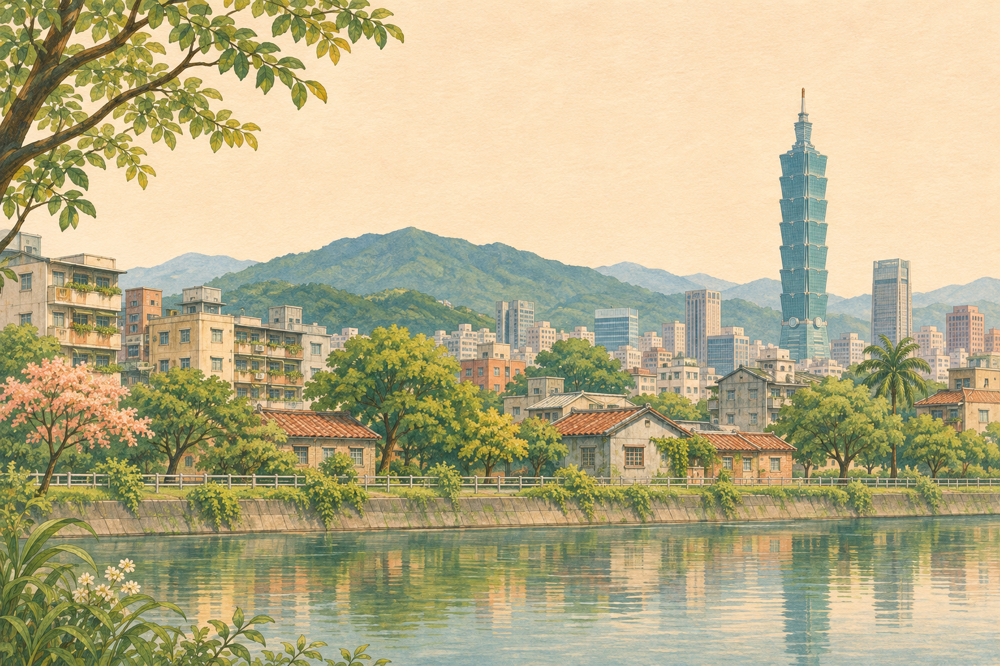

01 / 立體光景日照計算中PARIS, IN MINIATURE光，慢慢走過塞納河。此裝置無法顯示 3D，請使用支援 WebGL 的瀏覽器。↗A WINDOW TO THE REAL WORLD看看此刻的巴黎鐵塔與城市天際線 · earthTV本次小樣以來源網站觀看，尚未接入內嵌直播。開啟公開攝影機 ↗影像可用性與延遲依來源網站為準 FRANCE · 法國巴黎 Paris光景Live View ↗--:----Europe / Paris——
02 / 插畫日常日照計算中A SLOW DAY IN TAIPEI把日常，留在溫柔的光裡。↗A WINDOW TO THE REAL WORLD看看此刻的台北象山、大稻埕與城市風景 · 台北旅遊網本次小樣以來源網站觀看，尚未接入內嵌直播。開啟公開攝影機 ↗影像可用性與延遲依來源網站為準 TAIWAN · 台灣台北 Taipei插畫Live View ↗--:----Asia / Taipei——